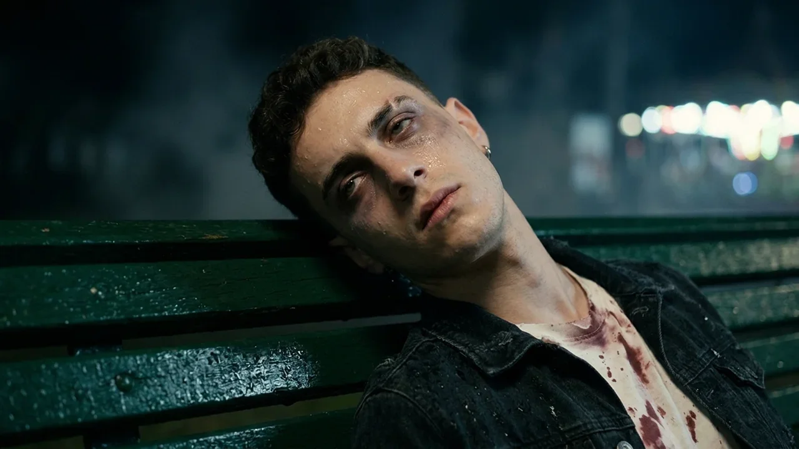
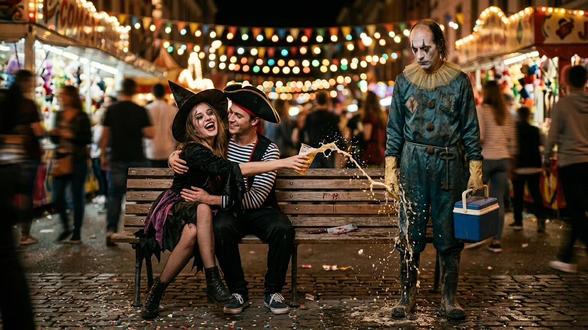
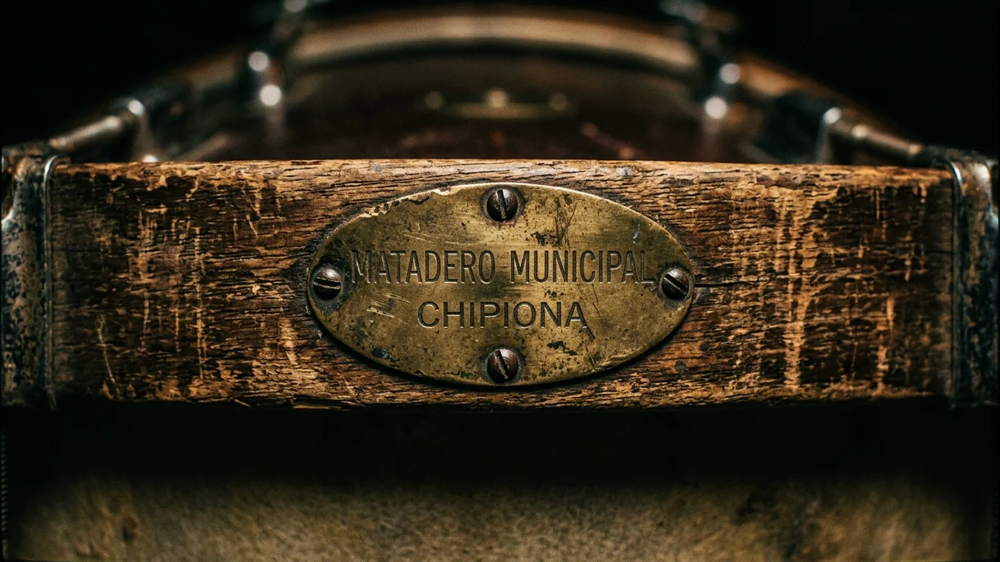
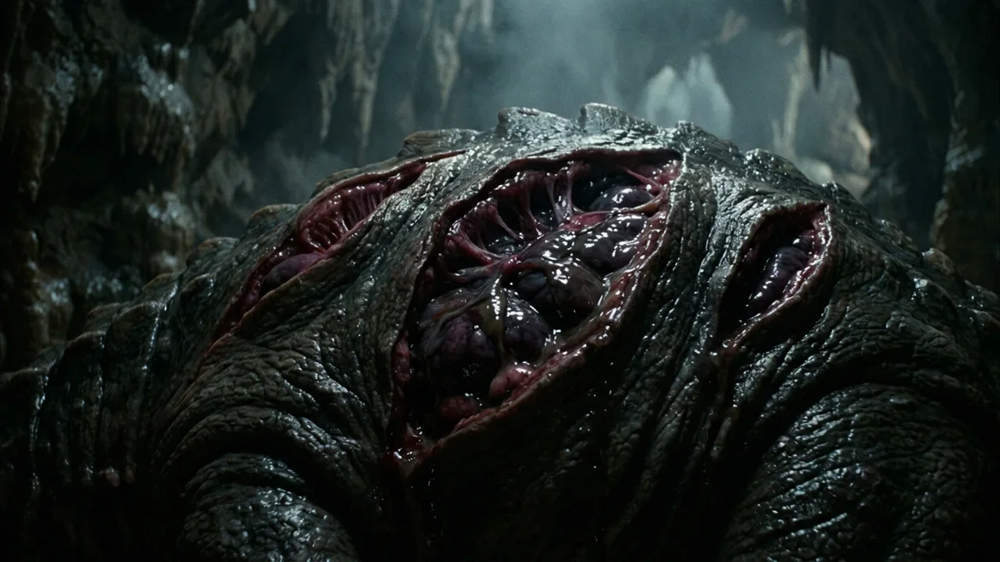
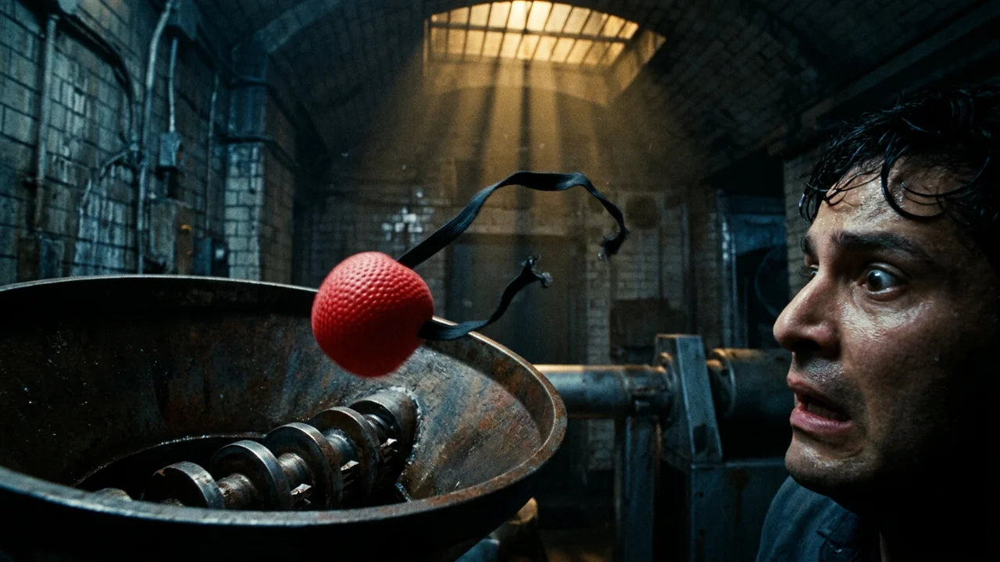

El parche del bombo le vibraba directamente en las muelas.
Rubén intentó levantar la barbilla, pero la cabeza le pesaba como plomo. Tenía veintiún años y llevaba desde las cinco de la tarde bebiendo vasos de litro de rebujito y ron barato. Estaba sentado en un banco de madera verde, en mitad de la plazoleta de Chipiona, bajo una guirnalda de bombillas que daba vueltas cada vez que abría los ojos.
A su alrededor hervía la madrugada de carnaval. Una batucada aporreaba los tambores a cuatro metros haciendo temblar los vasos de plástico del suelo. Pasaban romanos con corazas dobladas, marineros cantando a gritos y diablos con la pintura corrida por el sudor y el relente del mar. Todos bailaban apretados, pisando papelillos mojados de cerveza y tropezando con las rodillas de Rubén sin mirarlo.
«Cinco minutos», pensó, apoyando la nuca en el respaldo. «Descanso cinco minutos y busco a mis colegas en la calle Isaac Peral».
Llevaba el disfraz de zombi que se había apañado esa tarde: camisa blanca vieja, desgarrada por el costado izquierdo y manchada con sangre artificial del bazar, cazadora vaquera negra encima y la cara pintada con cera gris y ojeras moradas. Parecía tan muerto de mentira que nadie iba a extrañarse de verlo desmadejado en aquel banco.
Entonces el listón de madera crujió bajo un peso nuevo.
Alguien se sentó a su izquierda, aplastándole el bolsillo del vaquero. Un segundo después, otro cuerpo se encajó a su derecha. Por encima del olor a manzanilla y fritura, aquellos dos traían un frío de cámara frigorífica mezclado con barro podrido de bajamar y desinfectante.
Rubén entreabrió los párpados.
A su izquierda había un payaso corpulento, de cuarenta y ocho años, con traje de loneta a rombos granates y mostaza. Tenía la pintura blanca cuarteada sobre una barba canosa de tres días y una nariz de goma roja sujeta con elástico negro. Sobre la barriga cargaba un bombo de charanga desconchado.
—Mira qué angelito, Fito —dijo el del bombo con voz pastosa, pasándole un brazo pesado por los hombros como si posaran para una foto—. Con la camisa ya rota y pintada de colorao. Nos deja el trabajo hecho.
Rubén quiso apartarse, pero la lengua no le obedeció. A su derecha, el otro payaso, un tipo flaco de treinta y nueve años con traje de satén azul petróleo y gorguera de tul sucia de grasa, se acomodó entre las piernas una neverita azul de playa. Tenía la coronilla calva, mechones oscuros en las sienes y dos rombos negros pintados sobre unos ojos fijos que no parpadeaban.

—Calla y dale al mazo, Damián, que entra la caja —murmuró el flaco.
Unos dedos fríos, enfundados en látex amarillento, le subieron el faldón roto de la camisa por el costado izquierdo. Al instante sintió un pinchazo helado bajo las últimas costillas, como una aguja de hielo.
Intentó gritar, pero solo le salió un hipo sordo. El líquido le durmió la cintura hasta la ingle, dejándole las piernas como sacos de arena. A dos pasos, una chica disfrazada de bruja con el rímel corrido se reía a carcajadas colgada del cuello de un pirata, salpicando cerveza sobre las botas de goma de Fito.
Damián levantó la maza y golpeó su bombo al compás de la batucada.
Con cada golpe del parche, Rubén sentía un tirón profundo y húmedo dentro de la espalda, como si escarbaran con una cuchara caliente en su carne. No le dolía; solo le daba una náusea espesa. Con la mirada vidriosa, vio cómo Fito abría la neverita azul, metía dentro algo del tamaño de un puño que humeaba en el aire frío y cerraba con un chasquido seco.
Después sonaron ocho golpes metálicos en su piel, rápidos como una grapadora de tapicero, ocultos bajo el redoble final de los tambores y el grito de la gente borracha cuando la charanga rompió a tocar un pasodoble.
—Quieto ahí, campeón, que queda noche —le susurró Damián al oído, dándole dos palmadas en la cara pintada antes de levantarse.
Despertó porque el agua de una manguera municipal le salpicó los tobillos.
Había salido un sol pálido tras las azoteas encaladas. En la plazoleta solo quedaban dos barrenderos amontonando vasos aplastados, caretas rotas y serpentinas mojadas.
Rubén intentó enderezarse y soltó un quejido que le dobló el espinazo. Tenía la cazadora vaquera tiesa y la camisa de zombi pegada al costado izquierdo por una costra negra. Se llevó la mano al flanco temblando de frío. Aquello no olía a pintura dulzona del bazar; olía a hierro y a carnicería.

Creyendo que se había caído sobre un cristal roto o que alguien lo había pinchado en una pelea sin enterarse, caminó apoyándose en las paredes hasta la parada de taxis y pidió con un hilo de voz que lo llevaran al hospital.
En urgencias, una médica de guardia le abrió la cazadora y le apartó el faldón rasgado de la camisa blanca bajo el fluorescente.
—¿Pero qué te han hecho aquí, chaval? —dijo la mujer, echándose hacia atrás en el taburete.
Rubén giró el cuello sobre la camilla. En su costado izquierdo tenía un corte recto de doce centímetros cerrado con ocho grapas anchas de acero galvanizado, de las que se usan para coser ganado, embadurnadas con pasta amarilla.
Media hora después, tras la ecografía, el cirujano entró en el box con la cara blanca como la cal. Alguien que sabía por dónde abrir le había vaciado la fosa renal izquierda. Le habían sacado el riñón entero, ligando la arteria con hilo de pescar trenzado, en medio de una plaza abarrotada.
La Policía Judicial le tomó declaración en el hospital, pero al cuarto día, cuando le dieron el alta con una faja elástica, Rubén sabía que no encontrarían a nadie. La cámara de la plazoleta llevaba desde enero apuntando al tejado por un temporal. Para los inspectores, era una banda extranjera que ya habría cruzado la frontera.
Pero Rubén no podía dormir. Al cerrar los ojos volvía a sentir aquel olor a fango y salmuera. Un desconocido de fuera no huele a cieno de bajamar ni habla con el deje del puerto.
Pasó dos noches sin pegar ojo frente al ordenador, revisando vídeos subidos a las redes sociales desde Chipiona durante aquella primera madrugada de carnaval.
El viernes de madrugada, a dos días del domingo de piñata, dio con ellos.
Era un vídeo de catorce segundos grabado frente a los tambores. Al fondo, bajo las bombillas, se veía el banco verde. Allí estaba él, con la cabeza caída y la cara pintada, entre el payaso corpulento de rombos granates y el flaco de satén azul.

Rubén paró la imagen y amplió el fotograma.
En el aro de madera del bombo de Damián asomaba una chapa ovalada del antiguo Matadero Municipal, clausurado hacía diez años junto al arroyo. Y al bajar la cámara se veían las botas de caucho negro de pocero manchadas de cal y, colgada del cinturón junto a la neverita azul, una llave de hierro en T para levantar tapas de alcantarilla.
Estaban allí mismo, bajo las aceras.
El domingo de piñata por la noche, mientras las últimas charangas apuraban la fiesta, Rubén bajó del autobús en Chipiona sin avisar a nadie.
Llevaba la cazadora vaquera negra y la camisa del disfraz sobre la faja para no desentonar, una llave inglesa en el bolsillo y el móvil con la captura.
Caminó hacia la parte baja del polígono viejo, por donde sale el antiguo colector hacia los corrales de pesca. En la puerta de una bodega sin rótulo, un viejo con gorra de paño fumaba apoyado en una batea.
Rubén le enseñó la pantalla del móvil.
—¿Ha visto a estos dos esta noche?
El viejo miró el bombo en la foto y luego las ojeras de Rubén.
—A ese le dicen el Bombo desde que trabajaba en la nave vieja —murmuró el hombre, señalando hacia el callejón de las antiguas conserveras—. Hace media hora han tirado para allá abajo con el otro, el Aguja. Van todos los años por febrero con el mismo trapo y las cajas de frío. Yo que tú me volvía a la plaza, hijo. En ese caño no entra ni la guardia.

Rubén bajó la cuesta mientras los tambores se apagaban tras las naves.
Al doblar el callejón, bajo una farola que parpadeaba sobre los charcos, vio una furgoneta blanca sin matrículas. A tres metros, la tapa de hierro del colector general estaba desplazada sobre el adoquín, con marcas de botas de goma y gotas de hielo derretido.
Rubén se asomó al pozo. De abajo subía una bocanada tibia y espesa: el mismo olor a salmuera, amoníaco y carne cruda del banco de la plazoleta.
Apretó la llave inglesa en el bolsillo y bajó despacio por los peldaños de hierro oxidado.
La galería subterránea era una bóveda ancha de ladrillo macizo, negra de salitre, con dos pasillos resbaladizos junto a un canal de aguas oscuras.
Rubén caminó encorvado ochenta metros siguiendo el resplandor amarillento de unos focos de obra conectados a baterías de camión. Donde el colector se abría en una cámara circular de mareas, se pegó contra una columna de hormigón y asomó medio rostro.
La respiración se le cortó en seco.
En el centro de la bóveda, sobre una plataforma rodeada de agua negra, Damián y Fito estaban con los trajes de payaso arremangados hasta los codos. Alrededor había cuatro neveritas azules de playa abiertas sobre el suelo húmedo, llenas de hielo teñido de rosa.
Y del agua espesa del canal habían asomado tres criaturas que no tenían nombre.
Eran cuerpos abotargados del tamaño de un ternero grande, sin ojos ni patas, cubiertos de una piel gelatinosa y translúcida color sebo por la que asomaban venas azuladas. Tenían bocas redondas como ventosas erizadas de dientes cartilaginosos, y en el lomo, abiertas como branquias en carne viva, les palpitaban hacia fuera unos hígados descomunales, lobulados y negruzcos, que rezumaban un humor espeso.

Fito sacó de una neverita un riñón humano brillante de escarcha y lo arrojó a la primera de aquellas bocas circulares. La bestia lo engulló de un chasquido húmedo, estremeciendo su lomo mientras sus hígados externos se hinchaban y escupían un chorro de bilis oscura que Damián recogió en un frasco de cristal.
—Otro par de piezas antes de que acabe el domingo y tenemos caldo negro hasta el verano —gruñó Damián, limpiándose la frente pintada con el antebrazo—. Aunque el último de la plazoleta les supo a poco. Se han quedado esperando la guarnición.
—El de la camisa de muerto —dijo Fito en voz baja, cerrando su estuche de cuero antes de apartarse en silencio hacia la penumbra del arco lateral—. Siempre vuelven cuando la grapa les tira del nervio. El líquido que les meto en la espalda huele desde que pisan la escalerilla.
Rubén buscó con los ojos al payaso flaco junto a las neveritas, pero bajo el foco ya solo quedaba Damián, mirándolo fijo hacia la columna de hormigón. Rubén dio un paso atrás para correr hacia la salida, pero su zapatilla pisó un hueso blando y resbaló contra el ladrillo.
Antes de que pudiera enderezarse, una figura salió del pasillo lateral en sombra a su espalda.
Fito lo había rodeado por la galería de servicio sin hacer un solo ruido con las botas de goma y le hundió en el cuello otra aguja corta antes de que Rubén llegara a sacar la llave inglesa del bolsillo.
La herramienta cayó al suelo con un golpe seco.
Rubén se desplomó de rodillas sobre el limo frío, con los brazos muertos y los ojos abiertos, incapaz de mover un músculo. Damián se acercó desde el borde del canal, haciendo girar en la mano el mazo pesado del bombo.
—¿Ves cómo te dije que el chaval era cumplido, Fito? —dijo el grandullón, agachándose frente a Rubén con aquella sonrisa roja pintada sobre la barba sucia—. Viene solito a traer el resto. Con un riñón na más estas bichas se quedan a medias; eso es el aperitivo pa que suelten la hiel. Lo que les gusta es cuando la carne viene corrida y sudada del susto.
Rubén intentó gritar, pero de su garganta dormida solo salió un hilo de saliva.
Entre los dos lo agarraron por las axilas de la cazadora vaquera y lo arrastraron hasta el rincón de la plataforma, donde había una tolva de acero inoxidable acoplada con correas a un motor de gasoil. Debajo de la boca de salida había un barreño ancho de zinc con cebolla picada, sal gorda y vino rancio.
Damián tiró de la cuerda de arranque. El motor dio dos explosiones secas y las cuchillas del fondo del embudo empezaron a girar con un zumbido agudo de carnicería. En el canal, las tres criaturas pálidas sacaron medio cuerpo fuera del cieno, abriendo sus lomos para que aquellos hígados gigantescos y calientes respiraran el vapor de la cámara.
—No te apures, zombi, que aquí no se tira nada —le dijo Fito al oído mientras lo levantaban en vilo por los tobillos y los hombros sobre la boca de la tolva—. Los riñones se los comen enteros, pero con lo demás les hacemos un puré fino pa echarle la salsa por encima de los hígados, que si no se les reseca la corteza.
Lo inclinaron de cabeza hacia el embudo vibrante.
Lo último que Rubén vio antes de que las cuchillas le alcanzaran los hombros fue la nariz de goma roja de Damián soltándose del elástico y cayendo dentro de la picadora junto a su cara; y lo último que oyó, colándose muy arriba por la rejilla de la acera, fue el redoble alegre de un tambor de carnaval alejándose hacia la playa.